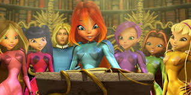
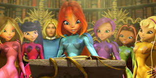

В первом и последнем плавании шикарного «Титаника» встречаются двое. Пассажир нижней палубы Джек выиграл билет в карты, а богатая наследница Роза отправляется в Америку, чтобы выйти замуж по расчёту. Чувства молодых людей только успевают расцвести, и даже не классовые различия создадут испытания влюблённым, а айсберг, вставший на пути считавшегося непотопляемым лайнера.


| Год | Страна | Жанр | Режиссер |
|---|---|---|---|
| 1997 | США | Драма | Джеймс Кэмерон |
Издавна существует загадка королевства Домино. Попытаться разгадать ее – значит ступить на путь полный опасностей. Но Блум, которая вместе со своими друзьями ищет родителей, принимает вызов! Однако на пути стоит загадочный и ужасный «Круг обсидиана» - злой гений Мандрагора и три могущественные ведьмы! Чтобы победить их, придется не только рисковать жизнью, но и найти ответы на многие вопросы. А это требует чистоты помыслов, бескорыстия и верности дружбе. Все ли герои смогут пройти испытание загадкой Домино?

 

| Год | Страна | Жанр | Режиссер |
|---|---|---|---|
| 2007 | Италия | Фантастика, Драма | Иджинио Страффи |
Журналист Уоллес Брайтон уехал брать интервью и исчез навсегда. Его друг вместе с девушкой Уоллеса отправляется на поиски. Поиски приводят пару к полицейскому в отставке, который много лет занимался поиском пропавших людей и который рассказывает им, что есть некая закономерность в пропаже людей. Люди пропадают, а потом находят их обезображенные кости. Полицейский думает, что все это дело рук серийного убийцы. Считая, что Уоллес каким-то образом попал в его руки, троица идет по следу маньяка, даже не представляя себе, что правда, которую им предстоит узнать, настолько ужасна, что в нее просто невозможно поверить.


| Год | Страна | Жанр | Режиссер |
|---|---|---|---|
| 2014 | США | Комедия, Драма | Кевин Смит |